Home / Countries / The Statue of Liberty on Postal Stamps
The Statue of Liberty on Postal Stamps
From the original Art on Stamps archive
The United States Declaration of Independence is a statement adopted by the Continental Congress on July 4, 1776, which announced that the thirteen American colonies then at war with Great Britain were now independent states, and thus no longer a part of the British Empire. ... Its stature grew over the years, particularly the second sentence, a sweeping statement of individual human rights: "We hold these truths to be self-evident, that all men are created equal, that they are endowed by their Creator with certain unalienable Rights, that among these are Life, Liberty and the pursuit of Happiness." Source
The Statue of Liberty (Liberty Enlightening the World, French: La Liberté éclairant le monde) is a colossal neoclassical sculpture on Liberty Island in New York Harbor, designed by Frédéric Bartholdi and dedicated on October 28, 1886.

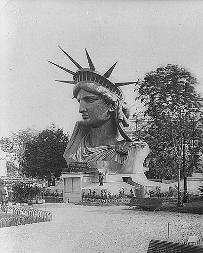
Frédéric Auguste Bartholdi (2 August 1834, Colmar, Haut-Rhin – 4 October 1904) was a French sculptor who is best known for designing the Statue of Liberty.
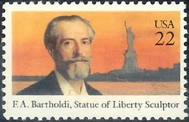
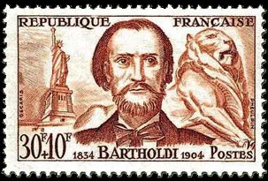
The plan of Bartholdi having been approved, more than 1,000,000 francs were raised by subscription throughout France for the building of the statue. In 1879, Bartholdi was awarded design patent U.S. Patent D11,023 for the Statue of Liberty. ... Before starting his commission, Bartholdi had traveled to the United States and personally selected New York Harbor as the site for the statue.
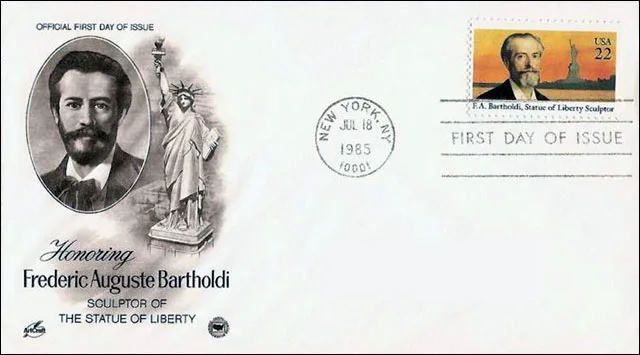
The United States set apart Bedlow's Island as a site for the monument, and funds were collected throughout the United States for the building of the pedestal, about $300,000 being raised. In October 1886, the structure was presented to the nation as the joint gift of the French and American people.
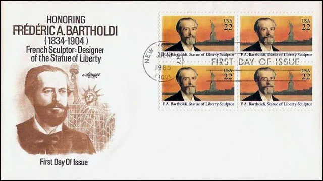
The statue is 151 feet and 1 inch high, and the top of the torch is at an elevation of 305 feet 11 inches from mean low-water mark. It was the largest work of its kind that had ever been completed up to that time. Source
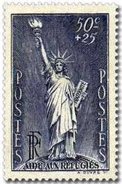
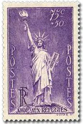
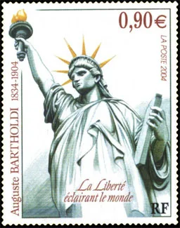
The statue, a gift to the United States from the people of France, is of a robed female figure representing Libertas, the Roman goddess of freedom, who bears a torch and a tabula ansata (a tablet evoking the law) upon which is inscribed the date of the American Declaration of Independence.
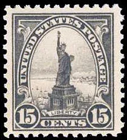
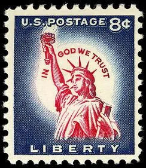
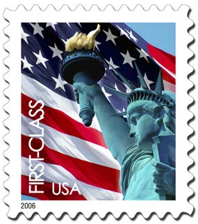
A broken chain lies at her feet. The statue has become an iconic symbol of freedom and of the United States. ... A ceremony of dedication was held on the afternoon of October 28, 1886. President Grover Cleveland, the former New York governor, presided over the event.[88] On the morning of the dedication, a parade was held in New York City; estimates of the number of people who watched it ranged from several hundred thousand to a million.
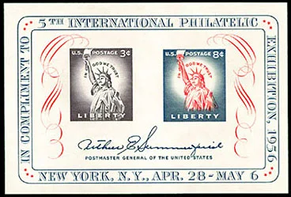
The statue rapidly became a landmark. Many immigrants who entered through New York saw it as a welcoming sight. Oral histories of immigrants record their feelings of exhilaration on first viewing the Statue of Liberty. ... In 1924,
President Calvin Coolidge used his authority under the Antiquities Act to declare the statue a national monument.
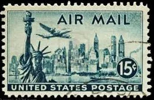
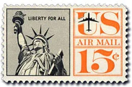
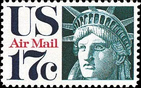
There are several plaques and dedicatory tablets on or near the Statue of Liberty. A plaque on the copper just under the figure's feet declares that it is a colossal statue representing Liberty, designed by Bartholdi and built by the Paris firm of Gaget, Gauthier et Cie (Cie is the French abbreviation analogous to Co.). A presentation tablet, also bearing Bartholdi's name, declares the statue to be a gift from the people of the Republic of France that honors "the Alliance of the two Nations in achieving the Independence of the United States of America and attests their abiding friendship. Source
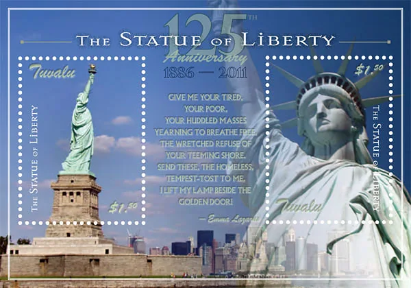
The Liberty statue appeared on many postal stamps. We show above some of them, mainly from USA and France. Point the mouse on the images for some information about the stamps (in IE). Click on the blunder USA stamps of 2010, shown below, for more info and some comments.